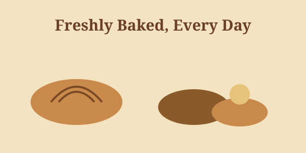

Welcome to Butterfield Bakery
Indulge in freshly baked goods, from bread to pastries, all made with love and care right here in the heart of Pretoria Central. Our friendly staff is always ready to help you select the perfect treat for any occasion.
Why Choose Butterfield Bakery?
- Freshly baked bread and pastries, every single day
- Convenient location in Pretoria Central with easy access
- Wheelchair-accessible parking available on-site
- Friendly, knowledgeable staff who love what they do
- Dine-in and takeout options to suit your schedule
Opening Hours
| Day | Hours |
|---|---|
| Monday - Saturday | 08:00 - 17:00 |
| Sunday | Closed |
See the Contact page for our full address and map.